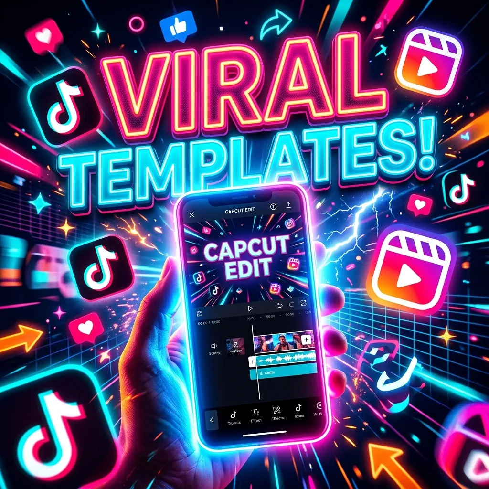

Discover the most viral TikTok & Reels templates — search any vibe, song, or trend!
Enter any vibe, song, or trend (e.g., 'Animal BGM', 'Sad Slow Mo', 'Velocity') to search live templates.
⚠️ Note: Premium templates require CapCut Pro for watermark-free export. Get CapCut Pro starting at ₹349 →

The fastest way to find a viral CapCut template link is by using the live search tool above. I use this tool daily to find Beat Sync and Slow Mo templates, and it directly connects to the official CapCut database.
Quick Facts:
For a long time, my short-form videos were completely flopping. I would record a nice vlog, throw some basic music over it, and post it. It would barely get 200 views. Then I noticed a pattern. The videos that were going viral all used the exact same editing style—perfectly timed music, sudden flashes, and fast speed ramps. They were using CapCut templates.
Instead of spending 5 hours manually cutting video clips to match the bass drop of a song, a template does all the heavy lifting for you. You just drop your raw clips into the app, and the template automatically applies the transitions, color grading, and music. It changed my entire editing workflow from taking hours to taking just two minutes.
If you are wondering who makes these, they are created by professional editors on TikTok and Instagram. When a creator makes a really cool edit, they can publish their timeline as a reusable template. When you see a Reel with the "CapCut · Try this template" button above the caption, that means it is a public template.
The problem is that finding a specific template later is very hard. TikTok's search engine is terrible for finding editing assets. That is exactly why I built the live search tool on this page. Our tool searches Google's indexed database of these published templates so you can find exactly what you need by just typing a keyword.
If you are not sure what to search for in the tool above, here are the most viral categories of 2026 that you should definitely try out:
1. Type a vibe, song name, or emotion into the search bar above (e.g., "Sad Slow Mo").
2. Click the "Search Live Database" button.
3. A new tab will open with official `capcut.com/t/` links matching your search.
4. Click any link on your mobile phone, and it will automatically open the CapCut app with the template loaded.
There is one catch you need to know about. While most basic templates work perfectly on the free version of CapCut, many of the highly viral ones use premium effects. If a template includes advanced keyframe animations, AI auto-captions, or cinematic LUTs, you will see a strict "Pro Feature" warning when you try to use it.
Even worse, if you try to force export a Pro template on a free account, the app will slap an ugly CapCut watermark right at the end of your video. To remove this watermark and export in full 4K HDR quality, you need to upgrade to CapCut Pro.
Since buying Pro directly through the app is blocked in India, I highly recommend using a local reseller. You can read my full guide below on how I bought my Pro license using Google Pay (UPI).